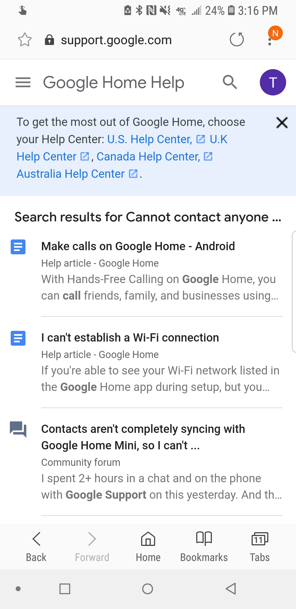
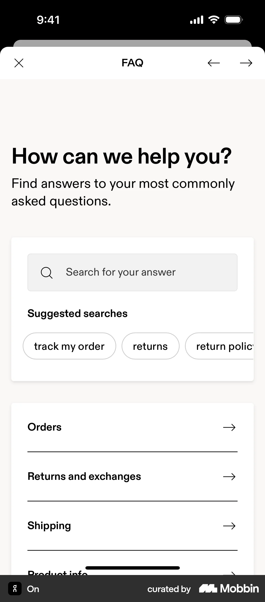

Oryginalna treść i tłumaczenie
EN: It’s best if the system doesn’t need any additional explanation. However, it may be necessary to provide documentation to help users complete their tasks.
PL: Najlepiej, gdy system nie wymaga dodatkowych wyjaśnień, ale czasem konieczne jest udostępnienie dokumentacji pomagającej użytkownikom wykonać zadania.
Przykład ze strony internetowej

Źródło: Google Support – Help Center
Przykład z aplikacji mobilnej

Źródło: Mobbin – mobile help support screens